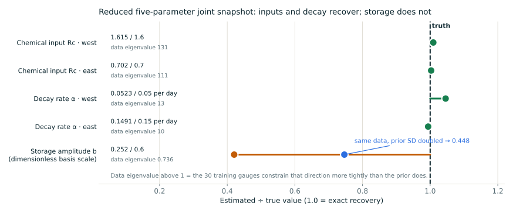
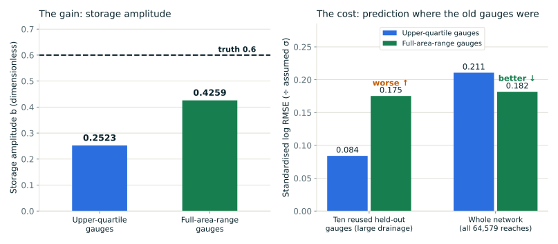
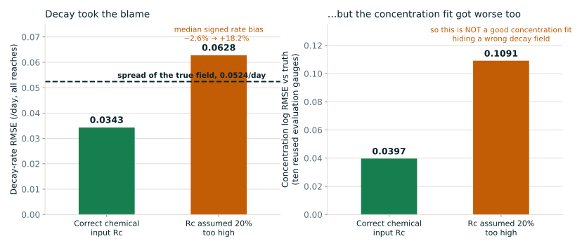

Four results, four plots, and what we still need to decide.
Equation 42 now runs as a differentiable snapshot operator on the real 64,579-reach
topology, and we have used it for four controlled synthetic experiments: a learned decay field,
a joint five-parameter inversion, a gauge-placement comparison, and a wrong-chemical-input stress
test. This page is the short version — each plot below is a real result with its key numbers
and its caveat, followed by three questions for you.
Read everything here as an OSSE. The river network, its connectivity,
travel time K and weighting X are real and are held known and fixed; the water forcing,
the chemistry, the decay-rate truth field and every observation are synthetic. Rc is the local
chemical input flux, not water runoff; ΔSc is a signed chemical mass anomaly
relative to equilibrium, not a change between two time steps. The 64,579-reach component is a
provisional operational domain, not a settled study basin. No measured nitrogen or DOC has been used,
no full MATLAB parity is claimed, and nothing here proves general identifiability. Held-out and
evaluation gauges are fixed, repeatedly used sets on the same network — not blind validation.
RESULT 1
A neural decay field works — once there are enough gauges.
Thirteen parameters map latitude and log K to a bounded per-reach decay rate. It never sees a
decay-rate label; it is trained only on noisy concentrations at virtual gauges.
Scroll the panel sideways to read it, or see the numbers written out below.
TestedCan a small network recover a spatially varying
decay field from noisy downstream concentrations alone?FoundYes, but observation coverage was the binding
constraint, not the network. Holding architecture, prior, initialisation, likelihood and optimiser
fixed and changing only 30 → 90 training gauges took median relative rate
error from 47.2% to 18.7% and correlation with the truth field from 0.37 to 0.825.
At 90 gauges the rate RMSE is 0.0343/day against 0.0564/day for the constant-rate
baseline — the first fit in the series to beat the spread of the true field itself
(0.0524/day), which is what a constant rate is worth.CaveatThe four bars change different factors and
are not a single controlled ladder: one removes noise, one strengthens the weight prior, one adds
gauges. Each is one seed, one initialisation, one noise realisation. The density panel shows where
it still fails — above roughly 0.15/day the learned rates flatten well below the 1:1 line.
The 13 weights remain non-identifiable; the L2 penalty is a regulariser, not physics.
18.7%median relative rate error, 90 gauges
0.0343 /dayrate RMSE, 90-gauge network
0.0564 /dayrate RMSE, constant-rate baseline
0.0524 /dayspread of the true rate field
RESULT 2
Inputs and decay separate. The storage term is still the prior talking.
A deliberately reduced problem: five free parameters — two chemical-input scalings, two decay
rates, and one amplitude on a fixed storage-anomaly spatial pattern.

Scroll the panel sideways to read it, or see the numbers written out below.
TestedCan one snapshot separate chemical inputs,
a storage anomaly and decay when all three are estimated together?FoundUnder this reduction, four of the five recover to
within 0.07 prior standard deviations — chemical inputs 1.615 / 1.6 and
0.702 / 0.7, decay rates 0.0523 / 0.05 and
0.1491 / 0.15 per day. The per-reach input/decay degeneracy survives only as a
within-region correlation (0.720 west, 0.788 east), with cross-region correlations near zero.
The storage amplitude does not recover: 0.252 against a truth of 0.6. Its data eigenvalue is
0.736 — below 1, meaning the 30 gauges constrain that direction less tightly than the
prior does — so the reported value is mostly prior. Doubling the prior width alone moves it to
0.448 while the other four shift by at most 0.044 prior sd. That is a prior statement,
not a measurement.Caveatb is a dimensionless amplitude on one fixed
spatial basis — not a measured mass and not a reach-wise storage field. This is snapshot
algebra with noise-free observations, not a dynamic 4D-Var; the 0.198 sigma is an assumed fitting
scale. Success with five parameters says nothing about the reach-wise problem, and the
Gauss-Newton covariance is a local linearisation, not a calibrated posterior.
RESULT 3
Moving the gauges buys storage information by spending decay information.
One change only: the same 30 training gauges drawn across the full drainage-area range instead of
each class's upper quartile. Same count, same truth, same held-out reaches, zero overlap with the
previous training set.

Scroll the panel sideways to read it, or see the numbers written out below.
TestedIs the storage amplitude unobservable in this
operator, or merely unobserved by that gauge design?FoundUnobserved, partly. Moving the gauges took the
storage amplitude from 0.2523 to 0.4259 (truth 0.6), its marginal information at a common
parameter point from 0.74 to 2.45, and its variance reduction from 42% to 71%. Median gauge
drainage area fell from 3,466 km² to 94 km², raising storage's share of flux at
the gauges from 2.4% to 5.5%.CaveatIt is a redistribution, not a free win.
Total data information fell from 266.0 to 207.9. Decay-west marginal information collapsed
from 11.7 to 1.40 and its error grew to +0.343 prior sd, because decay is read from contrast built
along long flow paths and the new design mostly stopped observing them. Prediction at the ten
reused held-out gauges got worse, 0.084 → 0.175, even as whole-network error
improved. A mixed design that tries to hold both is not yet verified, so it is not reported here.
RESULT 4
If we assume the wrong chemical input, decay absorbs it — but not invisibly.
The 90-gauge case reproduced bit-for-bit, then refitted with one change: the fitting forward model
multiplies every local chemical input Rc by 1.20 at all 64,579 reaches. Observations, water, K, X and
the truth field are untouched.

Scroll the panel sideways to read it, or see the numbers written out below.
TestedCan a wrong chemical load hide inside the learned
decay field while the concentrations still fit?FoundCompensation is real and proportionate —
median signed rate bias moved from −2.6% to +18.2% against an imposed +20% input bias,
rate RMSE nearly doubled to 0.0628/day (worse than predicting the mean rate), and correlation
with the truth field roughly halved, 0.825 → 0.440. But the concentration fit
also got worse, 0.0397 → 0.1091 log RMSE, so this is not a case of a
good concentration fit masking a wrong decay field. The detectable trace is the residual mean:
+0.279σ for the biased fit against −0.024σ for both the correct fit and the truth
itself.CaveatOne bias size, one sign, one seed, and a spatially
uniform multiplicative error — which a spatially varying decay field should be worst at
absorbing, so detection here is probably easier than it would be in general. The run does not
separate “no decay field can deliver a uniform log offset” from “the weight penalty
resisted”. Rc stays known and fixed in the fit, so this is not joint estimation of inputs and
decay.
0.0343 → 0.0628decay-rate RMSE (/day)
0.0397 → 0.1091concentration log RMSE vs truth
−2.6% → +18.2%median signed rate bias
+0.279σresidual mean — the detectable trace
Three things only you can settle
Questions for you.
Q1 · STORAGE
Is our reading of ΔSc the one you intended?
We treat it as a signed chemical mass anomaly relative to equilibrium, with Φ applied to the
storage term as written. Half the storage contributions at truth are negative and nothing is
clipped, yet no total flux goes negative.
Given the amplitude is currently mostly prior, what would make a physically defensible prior
width for it — and should storage enter a real inversion at all before that is settled?
Q2 · PRIORS & PARAMETERS
What should actually constrain a decay field?
Today it is an L2 penalty on 13 weights — a regulariser, not knowledge about rivers. A rate
range, a spatial correlation, or a CARDAMOM-derived prior would all behave differently.
And should chemical input Rc carry its own scale parameter and error covariance rather than being
assumed known, given result 4?
Q3 · GAUGES & FIRST REAL TARGET
What should the observing design optimise for?
Storage information and decay information are in tension under a fixed gauge budget. Which regime
should a realistic gauge or SWOT mask imitate?
And what is the first real-data target — nitrogen or DOC — over which basin boundary?
That choice sets the observation operator and fixes whether the 64,579-reach component stands.
Proposed next experiment
Let the fit estimate one global chemical-input scale.
Fourteen parameters instead of thirteen, starting from the biased +20% value, with the same 90
gauges and everything else unchanged. Recovering a scale near 1/1.20 with rate recovery restored
toward 18.7% would show the data do constrain a uniform load; a flat objective along that direction
with the rates absorbing the scale would show they do not. The +0.279σ residual mean from
result 4 is exactly the signal such a parameter would consume, which makes this the sharpest cheap
test of whether the input/decay ambiguity is real at this coverage or merely unexploited.
This is a proposal for discussion. It has not been run, and nothing on this page
reports it.
![Left: hexagonal-bin density of learned versus true decay rate for all 64,579 reaches, following the one-to-one line at low rates and flattening below it above about 0.15 per day, with the fitted constant rate drawn as a horizontal line at 0.0887 per day. Right: median absolute relative decay-rate error for four settings — 5.3% with no observation noise and 30 gauges, 66.0% with 20% noise and 30 gauges, 47.2% with 20% noise, 30 gauges and a stronger weight prior, and 18.7% with 20% noise and 90 gauges.](assets/discussion/fig1-learned-decay.svg)